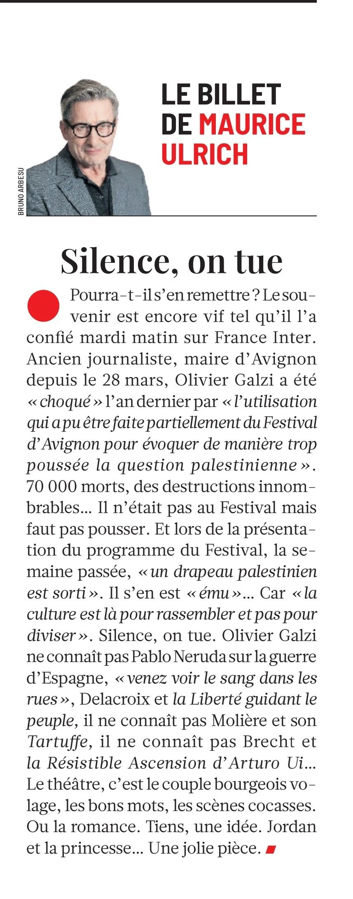

Chronique de L’Humanité
« Silence, on tue », le billet de Maurice Ulrich dans L’Humanité
Date indiquée par Facebook · 15 avril 2026
Repères éditoriaux
Dans ce billet, Maurice Ulrich répond aux propos d’Olivier Galzi, maire d’Avignon, sur la place de la question palestinienne au Festival d’Avignon. Il défend la possibilité pour les artistes de parler de la guerre et de ses victimes.
Texte conservé avec la publication
l'Humanité
@[100064860845478:2048:l'Humanité]

Sources
Archive rouge · export Facebook · AR-0002-FB-00816
À lire aussi · Pass culture, non à la punition collective ! · Le lien d’origine